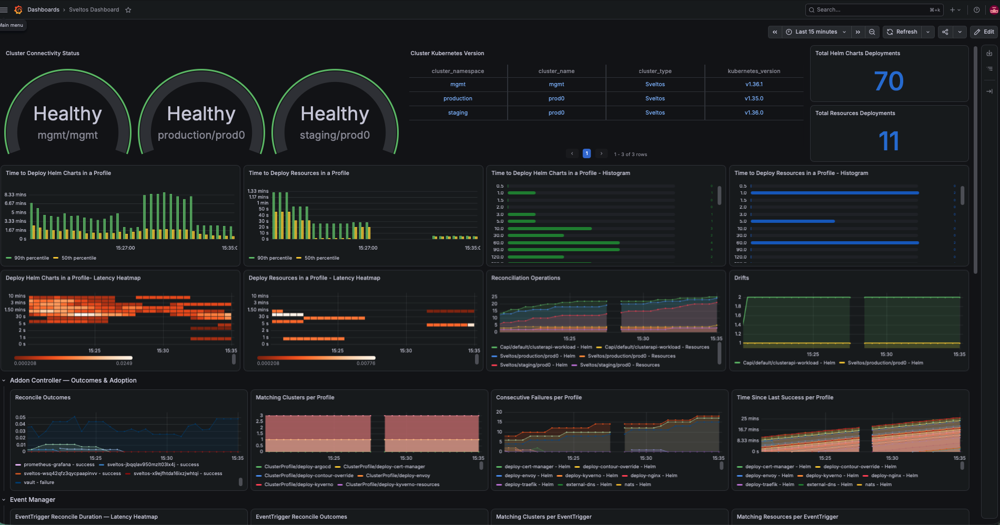

Introduction to the Sveltos Grafana Dashboard
The Sveltos Dashboard is designed to help users monitor key operational metrics and the status of their sveltosclusters in real-time. Grafana helps users visualize this data effectively, so they can make more efficient and informed operational decisions.

Getting Started
With the latest Sveltos release, users can take full advantage of the Sveltos Grafana dashboard. Before we start using the capabilities, ensure Grafana and Prometheus are deployed on the Sveltos management cluster.
To allow Prometheus to collect metrics from the Sveltos management cluster, perform the below if Sveltos was installed using the Helm chart.
Metrics Endpoint Authentication
Every Sveltos controller (addon-controller, classifier, event-manager, healthcheck-manager, access-manager, sveltoscluster-manager) serves /metrics on HTTPS port 8443, authenticated and authorized by default — this is on by design, not a bug. Unless a controller is started with --insecure-diagnostics (which serves plain HTTP with no auth at all, and is only appropriate when the endpoint is not otherwise reachable, e.g. a local/test cluster), every scrape request must carry a valid Kubernetes bearer token, and that token's identity must be authorized to read /metrics. Two symptoms point at this:
401 Unauthorized— no bearer token was sent at all, so token authentication (TokenReview) never even ran.403 Forbidden,Authorization denied for user system:serviceaccount:<ns>:<sa>— a token was sent and authenticated fine, but that ServiceAccount has no RBAC grant for the resource (SubjectAccessReviewdenied it).
To fix the 403, bind whichever ServiceAccount your scraper runs as to a ClusterRole granting get on the /metrics non-resource URL:
apiVersion: rbac.authorization.k8s.io/v1
kind: ClusterRole
metadata:
name: metrics-reader
rules:
- nonResourceURLs:
- "/metrics"
verbs:
- get
---
apiVersion: rbac.authorization.k8s.io/v1
kind: ClusterRoleBinding
metadata:
name: metrics-reader-binding
roleRef:
apiGroup: rbac.authorization.k8s.io
kind: ClusterRole
name: metrics-reader
subjects:
- kind: ServiceAccount
name: <your scraper's ServiceAccount name>
namespace: <your scraper's namespace>
This one ClusterRole is enough for every component's /metrics endpoint at once — nonResourceURLs authorization isn't scoped to a specific Service, so a single binding covers addon-controller, classifier, event-manager, and the rest. Each component does already ship its own pre-built role of this same shape (addon-metrics-reader, classifier-metrics-reader, event-metrics-reader, sc-metrics-reader, drift-detection-metrics-reader) — feel free to bind your scraper's ServiceAccount to one of those instead of creating a new metrics-reader, but there is no role literally named metrics-reader pre-installed by any component; the name above is yours to choose.
Note
Don't bind a namespace's default ServiceAccount to metrics-reader just to unblock a scrape — anything else running as default in that namespace would inherit the same access. Use a ServiceAccount dedicated to your scraper.
Note
The Helm chart's addon-controller ServiceMonitor (created when prometheus.enabled=true, below) points bearerTokenFile at /var/run/secrets/kubernetes.io/serviceaccount/token — that path is read from inside the scraping Prometheus pod, so it authenticates as Prometheus's own ServiceAccount. The chart does not create a metrics-reader binding for that ServiceAccount automatically, so unless your existing Prometheus RBAC already grants broad nonResourceURLs access (common in some kube-prometheus-stack-style setups, which already scrape kubelet/cAdvisor /metrics the same way), you'll need the binding above regardless of whether you're using the chart's ServiceMonitor or an external scraper like Grafana Alloy.
Helm Chart
$ helm upgrade <your release name> projectsveltos/projectsveltos -n projectsveltos --set prometheus.enabled=true
Interactive Import
Once Grafana and Prometheus are available, proceed by adding the Prometheus data source to Grafana and then importing the below Grafana dashboard.
https://raw.githubusercontent.com/projectsveltos/sveltos/main/docs/assets/sveltosgrafanadashboard.json
Note
Depending on the Grafana/Prometheus installation, identify the serviceMonitorSelector label of the Prometheus instance and import it to the Sveltos servicemonitor resources as a label. Check out the example below.
Confirm that all metrics are linked to their corresponding panels. The dashboard should automatically detect data connections from Prometheus.
Refresh to begin plotting tracked metrics. Customize the dashboard to maximize utility -- by updating thresholds, adding/removing/editing panels, and transforming metrics tracked.
Note
Some metrics only appear on Grafana when their value is non-zero, e.g. projectsveltos_reconcile_operations_total and projectsveltos_total_drifts. As long as Prometheus and Grafana have been configured correctly, this should not be a problem.
Detailed descriptions of the panels available on the dashboard and the tracked metrics are listed below.
Automated Import with Sidecar
Planning to use a sidecar for the dashboard import, feel free to use the below .json file. The same notes apply as in the above section.
https://raw.githubusercontent.com/projectsveltos/sveltos/main/docs/assets/sveltosgrafanadashboard_sidecar.json
Available Metrics
Sveltos lets users track and visualize a number of key operational metrics. All custom metrics are prefixed
projectsveltos_ regardless of which component emits them, purely to avoid name collisions with unrelated
tools scraped by the same Prometheus instance — the prefix is not tied to the Kubernetes namespace a given
component happens to be deployed into, so it stays stable across every install.
Note
A few metric names are emitted by more than one component (e.g. addon-controller,
event-manager, and classifier all export a reconcile_duration_seconds), each with a different
label set and meaning — the same pattern controller-runtime's own generic metrics already use,
disambiguated by which component's /metrics endpoint was scraped. When a query below needs to
isolate one component's series from another's, it filters on a label only that component sets
(e.g. profile_name!="" for addon-controller, event_trigger_name!="" for event-manager,
classifier_name!="" for classifier, feature="" for event-manager's duration histogram, since
addon-controller always sets feature and event-manager never does). The one exception is
classifier's own reconcile_duration_seconds: it carries the exact same three labels as
event-manager's (cluster_type/cluster_namespace/cluster_name, no fourth distinguishing label),
so isolating it requires filtering on the Prometheus-injected job/instance label from the scrape
target instead (e.g. job="classifier", depending on how the ServiceMonitor's job name resolves in
your Prometheus setup) rather than an in-metric label.
SveltosCluster Manager
The microservice that continuously verifies connectivity with registered clusters.
-
projectsveltos_cluster_connectivity_status: Gauge indicating the connectivity status of each cluster, where0means healthy and1means disconnected. -
projectsveltos_kubernetes_version_info:Gauge providing the Kubernetes version (major.minor.patch) of each cluster, using the "info metric" pattern (value always1, the version lives in thekubernetes_versionlabel). Any prior version's row for a cluster is cleared before the current one is set, so a cluster upgrade doesn't leave both the old and new version showing simultaneously. -
projectsveltos_connection_failures:Gauge mirroringSveltosCluster.status.connectionFailures— resets to0on the next successful check, so it answers "is this cluster stuck failing connectivity checks right now," the same distinctionreconcile_consecutive_failuresmakes for addon-controller. -
projectsveltos_agent_last_heartbeat_timestamp_seconds:Gauge with the Unix timestamp of the last heartbeat received from a pull-mode cluster's sveltos-agent (SveltosCluster.status.agentLastReportTime). Distinct fromcluster_connectivity_status: heartbeat staleness is specific to the pull-mode agent-push mechanism, not general management-cluster-to-workload-cluster API connectivity.time() - projectsveltos_agent_last_heartbeat_timestamp_secondsgives seconds since the last heartbeat.
All four metrics are removed entirely when a cluster is deregistered from Sveltos, so a deleted cluster's last-known state doesn't linger in Prometheus indefinitely.
Addon Controller
-
projectsveltos_reconcile_duration_seconds:Histogram of the duration to program a feature (Resources, Helm, or Kustomize) on a workload cluster. Labeled bycluster_type/cluster_namespace/cluster_name/feature, so it can be filtered to one cluster, aggregated to a namespace, or averaged fleet-wide, and each feature type is distinguishable rather than lumped together. -
projectsveltos_reconcile_operations_total:Counter of the total number of reconcile operations (attempts, regardless of outcome) performed for Helm charts, Resources, and Kustomizations, labeled by cluster and feature. -
projectsveltos_reconcile_outcome_total:Counter of terminal reconcile outcomes (status="success"orstatus="failure"), unlikereconcile_operations_totalwhich counts every attempt blind to outcome. Labeled by cluster, feature, status, and the owningprofile_kind/profile_namespace/profile_name(ClusterProfile or Profile) — this is what answers "is add-on X currently failing on N clusters." -
projectsveltos_matching_clusters:Gauge of how many clusters currently match a ClusterProfile/Profile's selector. Labeled byprofile_kind/profile_namespace/profile_name. Set independently of any reconcile activity, so it stays accurate even for a profile matching zero clusters. -
projectsveltos_reconcile_consecutive_failures:Gauge mirroringClusterSummary.status.featureSummaries[].consecutiveFailures— resets to0on the next success, so it answers "is this stuck failing right now," unlikereconcile_outcome_totalwhich only accumulates and never reflects recovery. -
projectsveltos_reconcile_last_success_timestamp_seconds:Gauge with the Unix timestamp of the last successful (Provisioned/Removed) terminal outcome for a feature on a cluster. Only moves forward on success, sotime() - projectsveltos_reconcile_last_success_timestamp_secondsgives "seconds since this last worked," useful even for something failing intermittently rather than in a tight consecutive streak. -
projectsveltos_total_drifts:Counter of the total number of configuration drifts detected in clusters, labeled by cluster, feature, and the owningprofile_kind/profile_namespace/profile_name. -
projectsveltos_outdated_helm_chart:Gauge that is1for every Helm chart deployment currently behind the latest version published in its upstream repository/registry, labeled by the owningprofile_kind/profile_namespace/profile_name, cluster, and chart/release. Set by a periodic check, independent of the reconcile loop; see Detecting Newer Helm Chart Versions. -
projectsveltos_outdated_helm_chart_check_last_run_timestamp_seconds:Gauge with the Unix timestamp of the last completed pass of the periodic outdated-Helm-chart checker. Runs only on the default (unsharded) addon-controller instance, since the check needs visibility across every cluster to avoid checking the same chart more than once. -
projectsveltos_outdated_helm_chart_check_failures_total:Counter of chart lookups skipped in the most recent check pass because their upstream repository/registry could not be queried (unreachable, authentication failure, timeout, chart not found). A coarse "is the checker itself healthy" signal — per-chart failures are logged instead, not exposed as a metric label, to avoid unbounded label cardinality.
Event Manager
-
projectsveltos_reconcile_duration_seconds:Histogram of the duration to process an EventTrigger for a cluster (evaluate matching events, create/update the resulting ClusterProfile(s)). Labeled bycluster_type/cluster_namespace/cluster_nameonly — nofeaturelabel, unlike addon-controller's metric of the same name, which is the label to filter on when disambiguating the two. -
projectsveltos_reconcile_outcome_total:Counter of terminal reconcile outcomes for an EventTrigger on a cluster. Labeled by cluster, status, andevent_trigger_name. -
projectsveltos_matching_clusters:Gauge of how many clusters currently match an EventTrigger'ssourceClusterSelector. Labeled byevent_trigger_nameonly. -
projectsveltos_matching_resources:Gauge of how many resources the most recently processed EventReport matched for an EventTrigger on a cluster (EventReport.spec.matchingResources, not CloudEvents — a separate matching mechanism). Labeled byevent_trigger_name/cluster_type/cluster_namespace/cluster_name. Set independent of whether ClusterProfile creation subsequently succeeds — it's a fact about the EventReport, not about what Sveltos did with it. -
projectsveltos_reconcile_last_success_timestamp_seconds:Gauge with the Unix timestamp of the last successful terminal outcome for an EventTrigger on a cluster. Same semantics as addon-controller's version above, labeled byevent_trigger_nameinstead of profile.
Classifier
-
projectsveltos_reconcile_duration_seconds:Histogram of the duration to program a Classifier (deploy sveltos-agent, required CRDs, and the Classifier instance itself) on a workload cluster. Labeled bycluster_type/cluster_namespace/cluster_nameonly — the same three labels as event-manager's metric of the same name, with no fourth label to disambiguate; see the note above on filtering by the scrapejobinstead. -
projectsveltos_reconcile_outcome_total:Counter of terminal reconcile outcomes (status="success"orstatus="failure") for a Classifier on a cluster. Labeled by cluster, status, andclassifier_name. -
projectsveltos_reconcile_last_success_timestamp_seconds:Gauge with the Unix timestamp of the last successful (Provisioned) terminal outcome for a Classifier on a cluster. Same semantics as the addon-controller/event-manager versions above, labeled byclassifier_name. -
projectsveltos_matching_clusters:Gauge of how many clusters currently match a Classifier's rules (kubernetesVersionConstraints,deployedResourceConstraint) and so receive itsclassifierLabels. Labeled byclassifier_nameonly. -
projectsveltos_label_conflicts:Gauge of how many clusters currently have at least one label key this Classifier wants to manage but can't, because another Classifier already owns that key on that cluster (see the keymanager conflict-detection logic). Labeled byclassifier_nameonly. Unique to classifier — no equivalent in addon-controller or event-manager. -
projectsveltos_mgmt_cluster_matching_clusters:Gauge of how many clusters currently match aManagementClusterClassifier'sclassificationLua(evaluated against management-cluster resources, not managed clusters). Labeled byclassifier_name. Kept as a separate metric frommatching_clustersabove sinceManagementClusterClassifieris a distinct CRD/reconciler with its own matching semantics. -
projectsveltos_mgmt_cluster_label_conflicts:Gauge of how many clusters currently have at least one label key aManagementClusterClassifiercannot manage due to a conflict. Labeled byclassifier_name. Same relationship tolabel_conflictsabove asmgmt_cluster_matching_clustershas tomatching_clusters.
Dashboard Panels
1. Cluster Connectivity Status
- Type: Gauge
- Purpose: Displays the connectivity status of each Kubernetes cluster managed by Sveltos.
- Query Used:
projectsveltos_cluster_connectivity_status - Interpretation: A “Healthy" cluster is one that is connected ( projectsveltos_cluster_connectivity_status: 0) and depicted in green. A "Disconnected" cluster (projectsveltos_cluster_connectivity_status: 1) is shown in red, to help users rapidly identify and address connectivity issues.
2. Cluster Kubernetes Version
- Type: Table
- Purpose: Lists the Kubernetes version deployed in each sveltoscluster.
- Query Used:
projectsveltos_kubernetes_version_info - Interpretation: The table displays clusters with their respective Kubernetes versions, to help users identify clusters in need of updates, and ensure compatibility everywhere.
3. Total Helm Charts Deployments
- Type: Stat
- Purpose: Counts the number of Helm chart deployments.
- Query Used:
sum(projectsveltos_reconcile_duration_seconds_count{feature="Helm"}) - Interpretation: Displays the number of Helm charts deployed across all sveltosclusters. This helps users assess the workload managed by Sveltos, track deployment activity, correlate any change in application performance with deployments, and optimize deployment strategies accordingly.
4. Total Resources Deployments
- Type: Stat
- Purpose: Counts the number of resource deployments.
- Query Used:
sum(projectsveltos_reconcile_duration_seconds_count{feature="Resources"}) - Interpretation: Displays the total count of resources deployed across all sveltosclusters. This helps users assess the workload managed by Sveltos, track deployment activity, correlate any change in application performance with deployments, and optimize deployment strategies accordingly.
5. Time to Deploy Helm Charts in a Profile
- Type: Bar Chart
- Purpose: Depicts the time required for deploying Helm Charts, by visualizing the 50th and 90th percentile of deployment times.
- Queries Used:
histogram_quantile(0.90, sum(rate(projectsveltos_reconcile_duration_seconds_bucket{feature="Helm"}[5m])) by (le))histogram_quantile(0.50, sum(rate(projectsveltos_reconcile_duration_seconds_bucket{feature="Helm"}[5m])) by (le)) - Interpretation: Provides deeper insights into the deployment times required by Helm Charts. By plotting both the 50th and the 90th percentile, this chart intends to help users gauge performance consistency and distribution, and update their deployment strategies accordingly.
6. Time to Deploy Resources in a Profile
- Type: Bar Chart
- Purpose: Depicts the time required for deploying Resources, by visualizing the 50th and 90th percentile of deployment times.
- Queries Used:
histogram_quantile(0.90, sum(rate(projectsveltos_reconcile_duration_seconds_bucket{feature="Resources"}[5m])) by (le))histogram_quantile(0.50, sum(rate(projectsveltos_reconcile_duration_seconds_bucket{feature="Resources"}[5m])) by (le)) - Interpretation: Provides deeper insights into the resource deployment times. By plotting both the 50th and the 90th percentile, this chart intends to help users gauge performance consistency and distribution, and update their deployment strategies accordingly.
7.Time to Deploy Helm Charts in a Profile - Histogram
- Type: Bar Gauge
- Purpose: Provides a histogram view of deployment times for Helm charts.
- Query Used:
projectsveltos_reconcile_duration_seconds_bucket{feature="Helm"} - Interpretation: Captures the distribution of deployment times for Helm charts, and allows users to track and address long-tail latencies.
8. Time to Deploy Resources in a Profile - Histogram
- Type: Bar Gauge
- Purpose: Offers a histogram vieew of resource deployment times.
- Query Used:
projectsveltos_reconcile_duration_seconds_bucket{feature="Resources"} - Interpretation: Captures the distribution of deployment times for resources, and allows users to track and address long-tail latencies.
9. Deploy Helm Charts in a Profile - Latency Heatmap
- Type: Heatmap
- Purpose: Provides a heatmap of Helm chart deployment latencies
- Query Used:
sum(rate(projectsveltos_reconcile_duration_seconds_bucket{feature="Helm"}[5m])) by (le) - Interpretation: Highlights the frequency and duration of Helm chart deployment latencies to help users identify patterns and optimize deployment management.
10. Deploy Resources in a Profile - Latency Heatmap
- Type: Heatmap
- Purpose: Provides a heatmap of Resource deployment latencies
- Query Used:
sum(rate(projectsveltos_reconcile_duration_seconds_bucket{feature="Resources"}[5m])) by (le) - Interpretation: Highlights the frequency and duration of resource deployment latencies to help users identify patterns and optimize deployment management.
11. Reconciliation Operations
- Type: Time Series
- Purpose: Shows the number of reconciliation operations performed, categorized by cluster (type, namespace, name) and feature.
- Query Used:
projectsveltos_reconcile_operations_total - Interpretation: Helps users monitor reconciliation processes triggered by Sveltos across clusters, to ensure operational stability.
12. Drifts
- Type: Time Series
- Purpose: Tracks and displays drifts, categorized by cluster (type, namespace, name) and feature.
- Query Used:
projectsveltos_total_drifts - Interpretation: Allows users to monitor configuration drifts, crucial for maintaining consistency and compliance across sveltosclusters, so they may detect and rectify discrepancies in workload clusters.
13. Reconcile Outcomes
- Type: Time Series
- Purpose: Shows the rate of successful vs. failed terminal reconcile outcomes, per ClusterProfile/Profile and status.
- Query Used:
sum(rate(projectsveltos_reconcile_outcome_total{profile_name!=""}[5m])) by (profile_name, status) - Interpretation: Answers "is add-on X currently failing on N clusters" directly — a rising
failureline for a givenprofile_namemeans that ClusterProfile/Profile is actively failing to deploy, distinct fromreconcile_operations_totalwhich counts every attempt regardless of outcome.
14. Matching Clusters per Profile
- Type: Time Series
- Purpose: Shows how many clusters currently match each ClusterProfile/Profile's selector.
- Query Used:
projectsveltos_matching_clusters{profile_name!=""} - Interpretation: A profile matching
0clusters may indicate a misconfiguredclusterSelector; tracked over time this also shows fleet adoption of a given add-on.
15. Consecutive Failures per Profile
- Type: Time Series
- Purpose: Shows the current consecutive-failure streak for each cluster/feature/profile combination.
- Query Used:
projectsveltos_reconcile_consecutive_failures{profile_name!=""} - Interpretation: Unlike the cumulative outcome counter, this resets to
0on the next success — a non-zero, rising value means something is stuck failing right now, rather than having failed at some point in the past.
16. Time Since Last Success per Profile
- Type: Time Series
- Purpose: Shows how long it has been since each cluster/feature/profile combination last reached a successful terminal state.
- Query Used:
time() - projectsveltos_reconcile_last_success_timestamp_seconds{profile_name!=""} - Interpretation: Catches staleness even for something failing intermittently rather than in a tight consecutive streak that would trip the panel above.
17. EventTrigger Reconcile Duration - Latency Heatmap
- Type: Heatmap
- Purpose: Provides a heatmap of EventTrigger processing latencies (evaluating matching events and creating/updating the resulting ClusterProfile(s)).
- Query Used:
sum(rate(projectsveltos_reconcile_duration_seconds_bucket{feature=""}[5m])) by (le) - Interpretation: The
feature=""filter isolates event-manager's series from addon-controller's metric of the same name, since only addon-controller ever sets thefeaturelabel.
18. EventTrigger Reconcile Outcomes
- Type: Time Series
- Purpose: Shows the rate of successful vs. failed terminal reconcile outcomes, per EventTrigger and status.
- Query Used:
sum(rate(projectsveltos_reconcile_outcome_total{event_trigger_name!=""}[5m])) by (event_trigger_name, status) - Interpretation: A rising
failureline for a given EventTrigger means it's actively failing to process events into ClusterProfiles for at least one cluster — worth cross-referencing withEventTrigger.status.clusterInfo[].failureMessagefor the reason.
19. Matching Clusters per EventTrigger
- Type: Time Series
- Purpose: Shows how many clusters currently match each EventTrigger's
sourceClusterSelector. - Query Used:
projectsveltos_matching_clusters{event_trigger_name!=""} - Interpretation: Same idea as the ClusterProfile version above, applied to EventTriggers — a
0may indicate a misconfigured selector.
20. Matching Resources per EventTrigger
- Type: Time Series
- Purpose: Shows how many resources the most recently processed EventReport matched, per EventTrigger and cluster.
- Query Used:
projectsveltos_matching_resources - Interpretation: Lets you tell "this EventTrigger keeps getting EventReports but nothing ever matches" (misconfigured EventSource) apart from "this is actively firing." Unique to event-manager, no name collision to filter around.
21. Time Since Last Success per EventTrigger
- Type: Time Series
- Purpose: Shows how long it has been since each EventTrigger last successfully processed a cluster.
- Query Used:
time() - projectsveltos_reconcile_last_success_timestamp_seconds{event_trigger_name!=""} - Interpretation: Same semantics as the ClusterProfile version above — catches an EventTrigger that's gone stale even if it isn't failing on every single reconcile.
22. Connection Failures per Cluster
- Type: Time Series
- Purpose: Shows the current consecutive-failure streak for each cluster's connectivity checks, as tracked by sveltoscluster-manager.
- Query Used:
projectsveltos_connection_failures - Interpretation: Resets to
0on the next successful check, so a non-zero, rising value means a cluster is stuck failing connectivity checks right now — the same "is this stuck right now" signalreconcile_consecutive_failuresgives for addon-controller, applied to basic cluster reachability instead of add-on deployment.
23. Time Since Last Agent Heartbeat (Pull Mode)
- Type: Time Series
- Purpose: Shows how long it has been since each pull-mode cluster's sveltos-agent last reported in.
- Query Used:
time() - projectsveltos_agent_last_heartbeat_timestamp_seconds - Interpretation: Specific to pull-mode/air-gapped clusters, where sveltos-agent pushes heartbeats rather than the management cluster polling — a climbing value here catches a stalled agent even before
cluster_connectivity_statuswould flag it, since heartbeat staleness and general API connectivity are checked independently.
24. Classifier Reconcile Duration - Latency Heatmap
- Type: Heatmap
- Purpose: Provides a heatmap of Classifier programming latencies (deploying sveltos-agent, required CRDs, and the Classifier instance to a workload cluster).
- Query Used:
sum(rate(projectsveltos_reconcile_duration_seconds_bucket{job="classifier"}[5m])) by (le) - Interpretation: Filtered by the scrape
jobrather than an in-metric label, since classifier'sreconcile_duration_secondsshares the exact same label set as event-manager's metric of the same name (see the note above). Adjust thejoblabel value to match how your Prometheus/ServiceMonitor setup names the classifier scrape target.
25. Classifier Reconcile Outcomes
- Type: Time Series
- Purpose: Shows the rate of successful vs. failed terminal reconcile outcomes, per Classifier and status.
- Query Used:
sum(rate(projectsveltos_reconcile_outcome_total{classifier_name!=""}[5m])) by (classifier_name, status) - Interpretation: A rising
failureline for a givenclassifier_namemeans that Classifier is actively failing to deploy to at least one cluster.
26. Matching Clusters per Classifier
- Type: Time Series
- Purpose: Shows how many clusters currently match each Classifier's rules.
- Query Used:
projectsveltos_matching_clusters{classifier_name!=""} - Interpretation: A Classifier matching
0clusters may indicate overly-restrictivekubernetesVersionConstraints/deployedResourceConstraintrules; tracked over time this also shows how a label rolls out across the fleet.
27. Label Conflicts per Classifier
- Type: Time Series
- Purpose: Shows how many clusters currently have a label-key conflict for each Classifier.
- Query Used:
projectsveltos_label_conflicts{classifier_name!=""} - Interpretation: A non-zero, rising value means this Classifier is currently losing ownership of at least one label key to another Classifier on some clusters — worth cross-referencing with
ClassifierReport.status.unmanagedLabelsfor which key and which competing Classifier.
28. Time Since Last Success per Classifier
- Type: Time Series
- Purpose: Shows how long it has been since each Classifier last successfully reconciled a cluster.
- Query Used:
time() - projectsveltos_reconcile_last_success_timestamp_seconds{classifier_name!=""} - Interpretation: Same semantics as the ClusterProfile/EventTrigger versions above — catches a Classifier that's gone stale even if it isn't failing on every single reconcile.
29. Matching Clusters per ManagementClusterClassifier
- Type: Time Series
- Purpose: Shows how many clusters currently match each
ManagementClusterClassifier'sclassificationLua. - Query Used:
projectsveltos_mgmt_cluster_matching_clusters - Interpretation: Same idea as panel 26, applied to
ManagementClusterClassifierinstead ofClassifier— evaluated against management-cluster resources rather than managed clusters.
30. Label Conflicts per ManagementClusterClassifier
- Type: Time Series
- Purpose: Shows how many clusters currently have a label-key conflict for each
ManagementClusterClassifier. - Query Used:
projectsveltos_mgmt_cluster_label_conflicts - Interpretation: Same idea as panel 27, applied to
ManagementClusterClassifierinstead ofClassifier.
31. Outdated Helm Chart Check Failures
- Type: Time Series
- Purpose: Shows how many chart lookups failed (unreachable repository/registry, authentication failure, timeout) during the most recent outdated-Helm-chart check pass.
- Query Used:
projectsveltos_outdated_helm_chart_check_failures_total - Interpretation: A coarse checker-health signal, not a per-chart diagnostic — a non-zero, rising value means the periodic version check is degraded for at least one chart, separate from any individual chart actually being outdated. Cross-reference addon-controller logs for which repository/registry failed.
32. Time Since Last Outdated Helm Chart Check
- Type: Time Series
- Purpose: Shows how long it has been since the periodic outdated-Helm-chart checker last completed a full pass.
- Query Used:
time() - projectsveltos_outdated_helm_chart_check_last_run_timestamp_seconds - Interpretation: A climbing value means the checker has stopped running or is stuck — without this, a broken checker is indistinguishable from "every chart happens to be up to date," since
projectsveltos_outdated_helm_chartalone reads the same in both cases. In a sharded deployment this metric is emitted only by the default (unsharded) instance, which keeps running the check for the whole fleet — there's no per-shard equivalent to scrape.